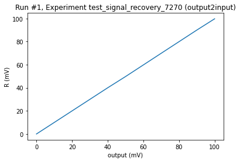
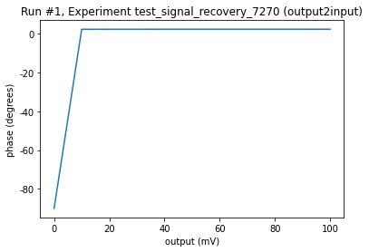

Example of Signal Recovery 7270 driver usage¶
[ ]:
"""
General driver notes:
With the SR_7270 read commands end with the echo "\n\x00",
and write commands return only "\x00".
ask_raw function has been rewritten to read echo to remove from buffer.
write_raw function has been rewritten to also read after writing using ask_raw.
Get commands ending with . as in 'x.' are known as floating point in manual.
Never change noise mode as TC values will not be correct.
(If you want to change this then the driver will need to updated.)
Change I_mode for choosing to measure current vs voltage using:
'CURRENT_MODE_OFF', 'CURRENT_MODE_ON_HIGH_BW', 'CURRENT_MODE_ON_LOW_BW
Change V_mode for measuring A, -B or A - B voltages using
'INPUTS_GNDED', 'A_INPUT_ONLY', '-B_INPUT_ONLY', 'A_B_DIFFERENTIAL'
Reference frequency is set by INT, EXT_REAR or EXT_FRONT.
If in mode INT then oscillator frequency changes reference frequency.
Otherwise, reference frequency controlled by input.
"""
[1]:
import qcodes as qc
from qcodes import Station, load_or_create_experiment, \
initialise_database, Measurement
from qcodes.dataset.plotting import plot_by_id
from qcodes.utils.dataset.doNd import do1d
Connect to device¶
[2]:
import qcodes_contrib_drivers.drivers.Ametek.SR_7270 as SR_7270
SR = SR_7270.Signalrecovery7270('SR', address='USB0::0x0A2D::0x001B::13086379::RAW')
[3]:
SR.print_readable_snapshot(update=True)
SR:
parameter value
--------------------------------------------------------------------------------
IDN : {'vendor': 'Ametek', 'model': '7270', 'serial': None, 'firmwa...
I_mode : CURRENT_MODE_OFF
V_mode : A_INPUT_ONLY
frequency : 77 (Hz)
noise_mode : OFF
osc_amplitude : 0 (V)
osc_frequency : 77 (Hz)
phase : 0 (Degrees)
r : 0 (V)
reference : INT
sensitivity : 0.1 (V)
timeconstant : 0.1 (s)
timeout : 5 (s)
x : 0 (V)
xy : 0j (V)
y : 0 (V)
Setup db and station for test measurerment¶
[4]:
# create an empty database based on the config file
qc.initialise_or_create_database_at('./test_signal_recovery_7270.db')
Upgrading database; v0 -> v1: : 0it [00:00, ?it/s]
Upgrading database; v1 -> v2: 100%|█████████████| 1/1 [00:00<00:00, 125.00it/s]
Upgrading database; v2 -> v3: : 0it [00:00, ?it/s]
Upgrading database; v3 -> v4: : 0it [00:00, ?it/s]
Upgrading database; v4 -> v5: 100%|█████████████| 1/1 [00:00<00:00, 142.85it/s]
Upgrading database; v5 -> v6: : 0it [00:00, ?it/s]
Upgrading database; v6 -> v7: 100%|██████████████| 1/1 [00:00<00:00, 9.52it/s]
Upgrading database; v7 -> v8: 100%|█████████████| 1/1 [00:00<00:00, 111.11it/s]
Upgrading database; v8 -> v9: 100%|█████████████| 1/1 [00:00<00:00, 333.30it/s]
[5]:
exp = load_or_create_experiment(experiment_name='test_signal_recovery_7270',
sample_name="output2input")
[6]:
station = qc.Station(SR)
[7]:
print('Lockin x value is ' + str(SR.x()) + ' V' )
print('Lockin y value is ' + str(SR.y()) + ' V' )
print('Lockin xy value is ' + str(SR.xy()) + ' V' )
print('Lockin R value is ' + str(SR.r()) + ' V' )
print('Lockin Phase value is ' + str(SR.phase()) + ' deg' )
print('Lockin Frequency value is ' + str(SR.frequency()) + ' Hz' )
Lockin x value is 0.0 V
Lockin y value is 0.0 V
Lockin xy value is 0j V
Lockin R value is 0.0 V
Lockin Phase value is -180.0 deg
Lockin Frequency value is 77.0 Hz
[8]:
# Output is directly connect to A input
SR.reference('INT')
SR.I_mode('CURRENT_MODE_OFF')
SR.V_mode('A_INPUT_ONLY')
SR.osc_amplitude(0)
SR.osc_frequency(77)
print('Reference frequency is ' + str(SR.frequency()) + ' Hz' )
print('Oscillator frequency is ' + str(SR.osc_frequency()) + ' Hz')
SR.sensitivity(.1)
SR.timeconstant(.1)
Reference frequency is 77.0 Hz
Oscillator frequency is 77.0 Hz
[9]:
#Set up lockin for polar measurement of output
In_R = qc.ScaledParameter(SR.r, gain=1, name='R', unit='V')
In_phase = qc.ScaledParameter(SR.phase, gain=1, name='phase', unit='degrees')
output = qc.ScaledParameter(SR.osc_amplitude, gain=1, name='output', unit='V')
[10]:
do1d(output, 0, .1, 11, 1, In_R, In_phase, do_plot = True,measurement_name='output_varied')
Starting experimental run with id: 1. Using 'qcodes.utils.dataset.doNd.do1d'
[10]:
(output_varied #1@C:\Users\g-gre-gre050342\Qcodes_contrib_drivers\docs\examples\test_signal_recovery_7270.db
-----------------------------------------------------------------------------------------------------------
output - numeric
R - numeric
phase - numeric,
[<AxesSubplot:title={'center':'Run #1, Experiment test_signal_recovery_7270 (output2input)'}, xlabel='output (mV)', ylabel='R (mV)'>,
<AxesSubplot:title={'center':'Run #1, Experiment test_signal_recovery_7270 (output2input)'}, xlabel='output (mV)', ylabel='phase (degrees)'>],
[None, None])


[11]:
SR.osc_amplitude(0)
[ ]: